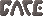
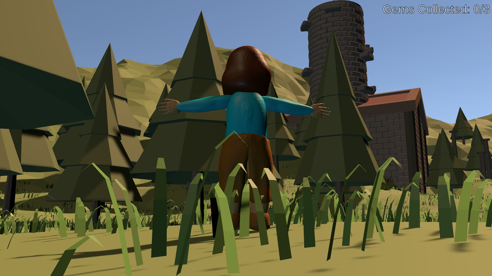
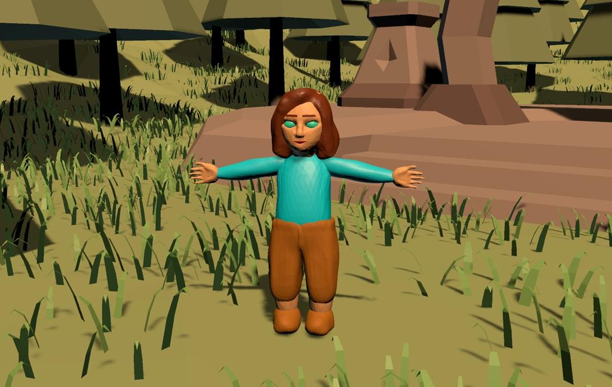

Gate is a short 3D platformer, created during a 48 hour game jam at Bjerkely Folkehøyskole. The goal of the game is to collect 3 gems, and then exit through the tituar "gate". The game was created by 3 people, with myself resposible for the game code and music, while the other 2 made the 3D models and sound effects.

The main character is a forest gnome, however a different model was used up until 30 minutes before the deadline.
The game was made using Unity and C#, with models created in Blender
The game was featured on the Bjerkely Folkehøyskole YouTube channel!
(Link to YouTube if player is broken)
Bernt Lund Johnsen
bernt.johnsen@funkweb.org